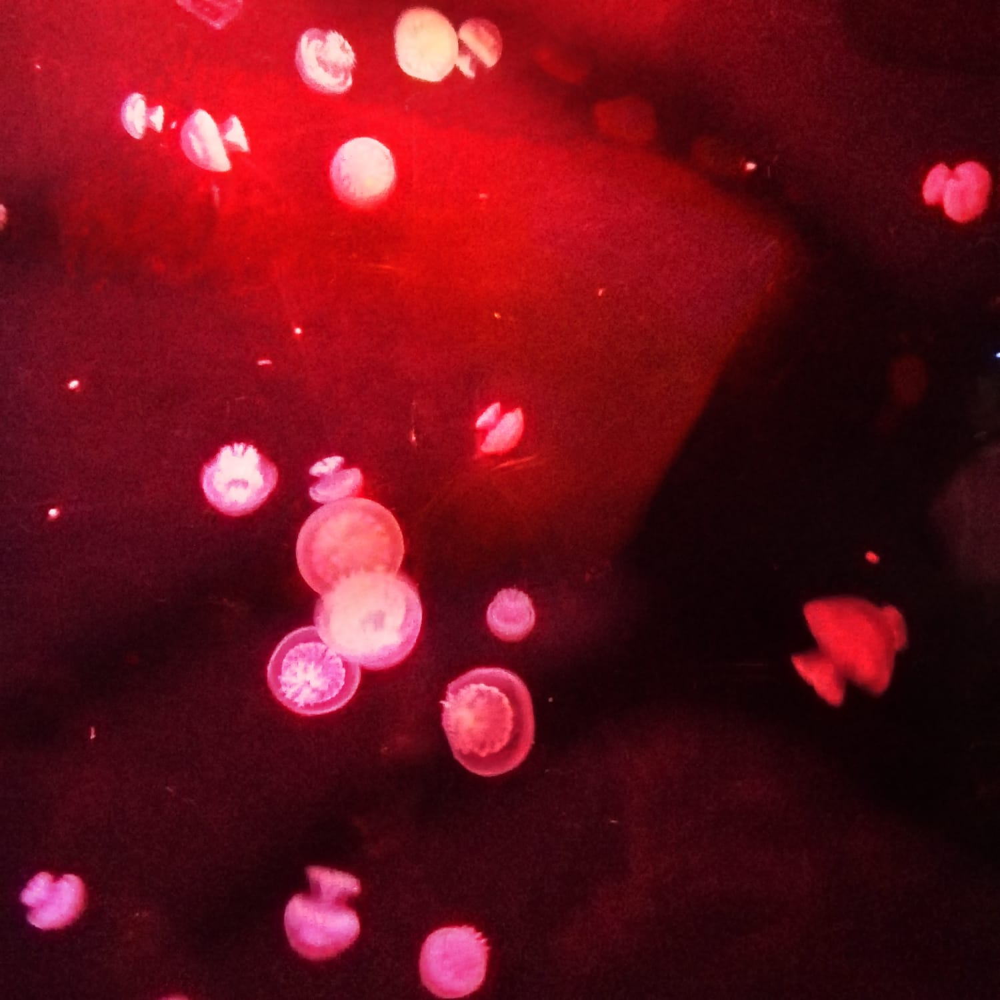
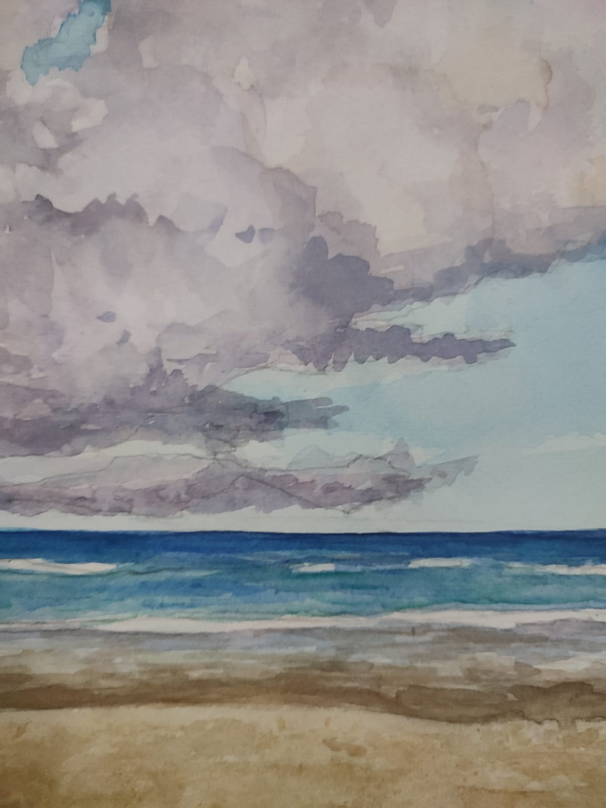
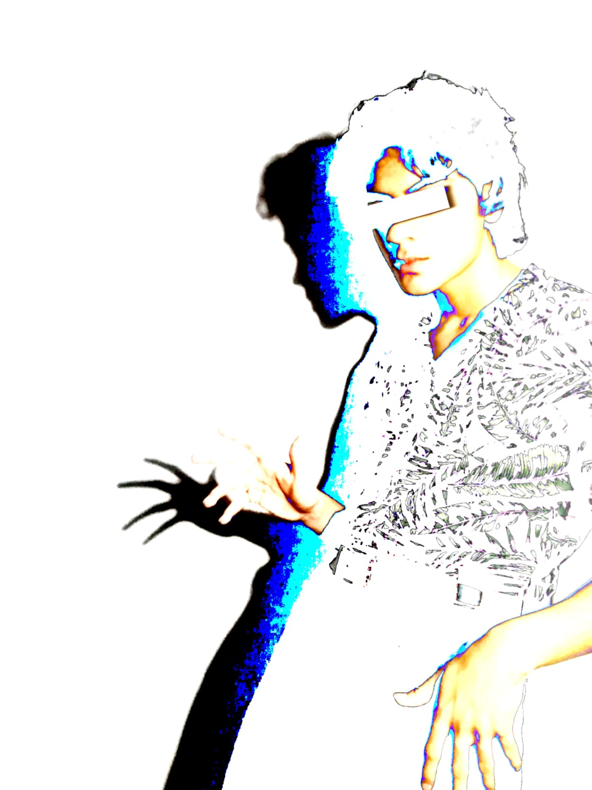
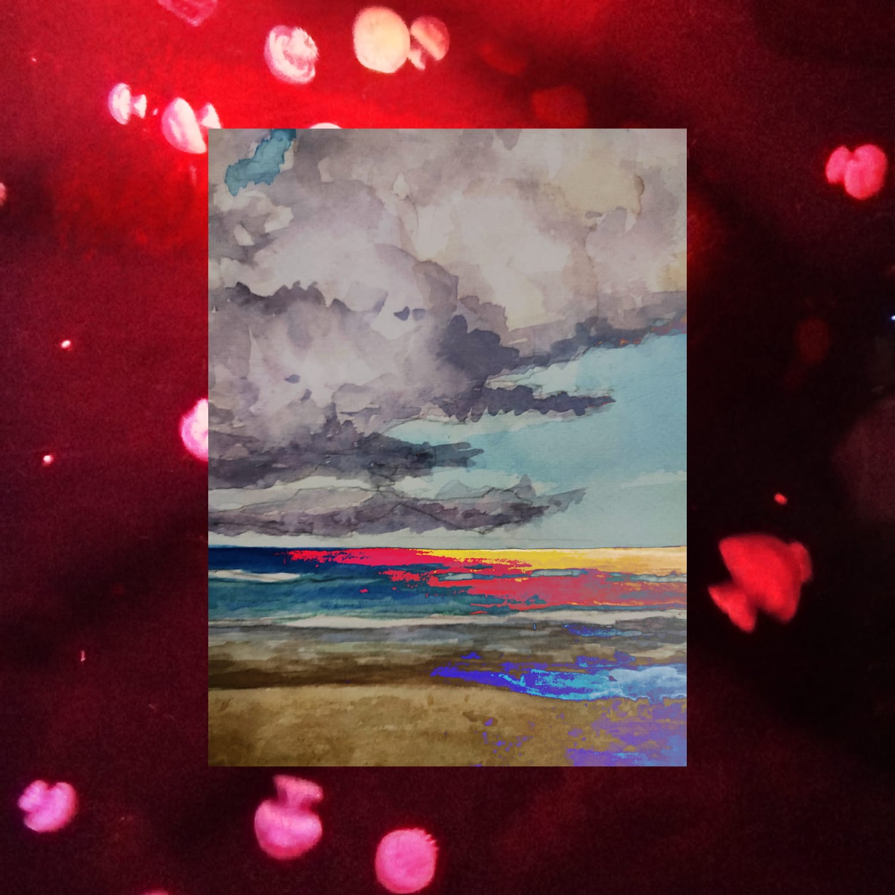
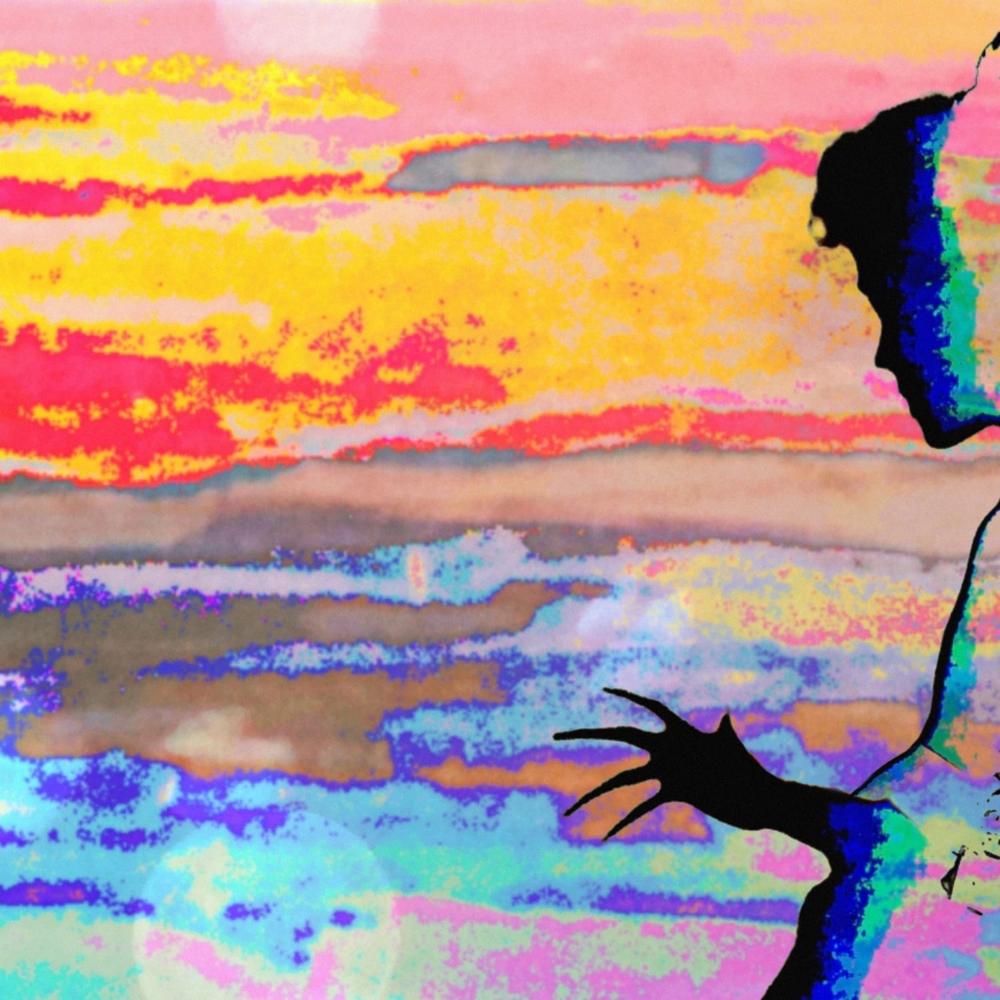
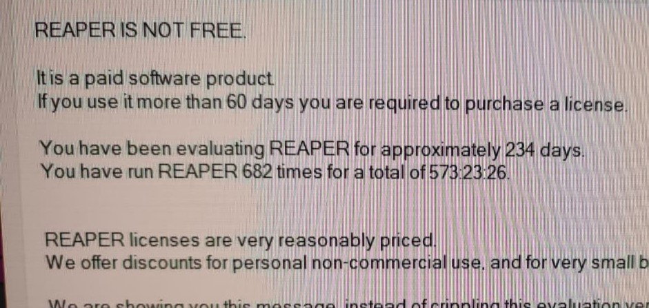

En Adversidad
LANZAMIENTO: 27 DE AGOSTO DE 2022
El Concepto
En Adversidad es un EP narrativo que explora la constante lucha con uno mismo a través de tres etapas:
- Ruido Blanco: Representa el autosabotaje; la decisión consciente de caer en malos hábitos. Habla de la incertidumbre ante el futuro y el miedo a no ser capaz de superar tus propios obstáculos.
- En Adversidad: Aborda el esfuerzo por cambiar y la aceptación de los errores como cicatrices. A la vez, es una crítica colectiva contra el consumismo y el estilo de vida superficial que el sistema nos impone.
- Sin Seguridad: Es la conclusión. La aceptación de que para mejorar tienes que pasar por un ciclo constante de conflicto interno. Es entender que es mejor elegir vivir la vida vulnerable y "Sin Seguridad", que quedarte estancado en la conformidad de no arriesgarte a nada.
En lo personal, este mensaje me ha ayudado a aceptar mis propios defectos y luchas internas como parte de mi identidad, y a abrazar los problemas que se presentan porque cada uno de ellos me hizo lo que soy ahora.
Proceso Creativo & Grabación
Con este EP aprendí a producir música en mi computadora. Las canciones ya las tenía compuestas en guitarra acústica; las practicaba a diario imaginando cómo irían a sonar con una producción más completa. La primera letra que escribí fue "En Adversidad", allá por la secundaria o preparatoria; la pulí durante un par de años, cambiando detalles hasta que quedó lista.
Siempre me atrajeron las canciones de larga duración como Stairway to Heaven, Bohemian Rhapsody, November Rain, etc. Me gustaba mucho la idea de que la canción evolucionara entre sus partes sin perder su esencia, y es por eso que quise hacer que "En Adversidad" tuviera esa estructura de varias partes, con cambios de ritmo y atmósfera.
"Ruido Blanco" nació originalmente en inglés con una temática distinta. Con el tiempo, decidí pasarla al español y cambiarle el ritmo, con influencia en las guitarras de How Soon Is Now? de The Smiths. Recuerdo haberla compuesto estando enfermo, y eso me ayudó a ponerle esa forma de cantar en la canción.
"Sin Seguridad" fue la última que escribí y la hice en un periodo en el que me esforzaba a hablar más con las personas y salir más de mi zona de confort, y creo que eso se refleja directo en la letra y el mensaje de la canción.
El Arte Visual
Para la portada utilicé una técnica de overlays con fotos sobrepuestas; es una estética del diseño gráfico que siempre me ha gustado y me ha servido de inspiración para varias de mis portadas. Al principio dudé sobre si incluir mi rostro, ya que no me agrada mucho ser la cara visible del proyecto, pero al final sí me convenció la composición de la portada conmigo ahí, solo me puse algo para taparme los ojos.